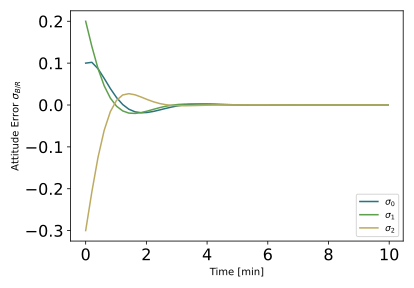
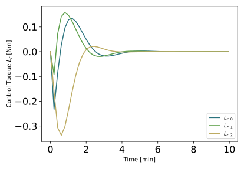

scenarioAttitudePointingPyDEPRECATED¶
Overview¶
Demonstrates how to stabilize the attitude tumble without translational motion. This script sets up a 6-DOF spacecraft, but without specifying any orbital motion. Thus, this scenario simulates the spacecraft translating in deep space. The scenario is a version of scenarioAttitudePointing where the Module: mrpPD feedback control module is replaced with an equivalent python based BSK MRP PD control module.
The script is found in the folder basilisk/examples and executed by using:
python3 scenarioAttitudePointingPyDEPRECATED.py
As with scenarioAttitudePointing, when the simulation completes 3 plots are shown for the MRP attitude history, the rate tracking errors, as well as the control torque vector.
This script showcases the deprecated way of creating Python modules. For the newer way, refer to scenarioAttitudePointingPy.
The MRP PD control module in this script is a class called PythonMRPPD. Note that it has the
same setup and update routines as are found with a C/C++ Basilisk module.
To use a Python module in a simulation script, not that the python modules must be added to a special python specific process and task list. This is done with the commands:
pyModulesProcess = scSim.CreateNewPythonProcess(pyProcessName, 9)
pyModulesProcess.createPythonTask(pyTaskName, simulationTimeStep, True, -1)
Note that the python processes are always evaluated after the regular C/C++ processes. Thus, the priority number only controls the order of the python processes, not the python process execution relative to regular Basilisk processes.
Creating an instance of the Python module is done with the code:
pyMRPPD = PythonMRPPD("pyMRP_PD", True, 100)
pyMRPPD.K = 3.5
pyMRPPD.P = 30.0
pyModulesProcess.addModelToTask(pyTaskName, pyMRPPD)
The first argument is the module tag string, the second is a bool argument specifying if the module is active or note, and the last is the priority value for this module. The next step is to configure the module variables as you do with any other Basilisk module. Finally, the module is added to the special task list specifically for executing python modules.
Illustration of Simulation Results¶
show_plots = True
Here a small initial tumble is simulated. The resulting attitude and control torque histories are shown below. The spacecraft quickly regains a stable orientation without tumbling past 180 degrees.
- class scenarioAttitudePointingPyDEPRECATED.PythonMRPPD(modelName, modelActive=True, modelPriority=- 1)[source]¶
Bases:
Basilisk.utilities.simulationArchTypes.PythonModelClassThis class inherits from the PythonModelClass available in the
simulationArchTypesmodule. The PythonModelClass is the parent class which your Python BSK modules must inherit. The class uses the following virtual functions:reset: The method that will initialize any persistent data in your model to a common “ready to run” state (e.g. filter states, integral control sums, etc).updateState: The method that will be called at the rate specified in the PythonTask that was created in the input file.
Additionally, your class should ensure that in the
__init__method, your call the super__init__method for the class so that the base class’ constructor also gets called to initialize the model-name, activity, moduleID, and other important class members:super(PythonMRPPD, self).__init__(modelName, modelActive, modelPriority)
You class must implement the above four functions. Beyond these four functions you class can complete any other computations you need (
Numpy,matplotlib, vision processing AI, whatever).- reset(currentTime)[source]¶
The reset method is used to clear out any persistent variables that need to get changed when a task is restarted. This method is typically only called once after selfInit/crossInit, but it should be written to allow the user to call it multiple times if necessary. :param currentTime: current simulation time in nano-seconds :return: none
- updateState(currentTime)[source]¶
The updateState method is the cyclical worker method for a given Basilisk class. It will get called periodically at the rate specified in the Python task that the model is attached to. It persists and anything can be done inside of it. If you have realtime requirements though, be careful about how much processing you put into a Python updateState method. You could easily detonate your sim’s ability to run in realtime.
- Parameters
currentTime – current simulation time in nano-seconds
- Returns
none